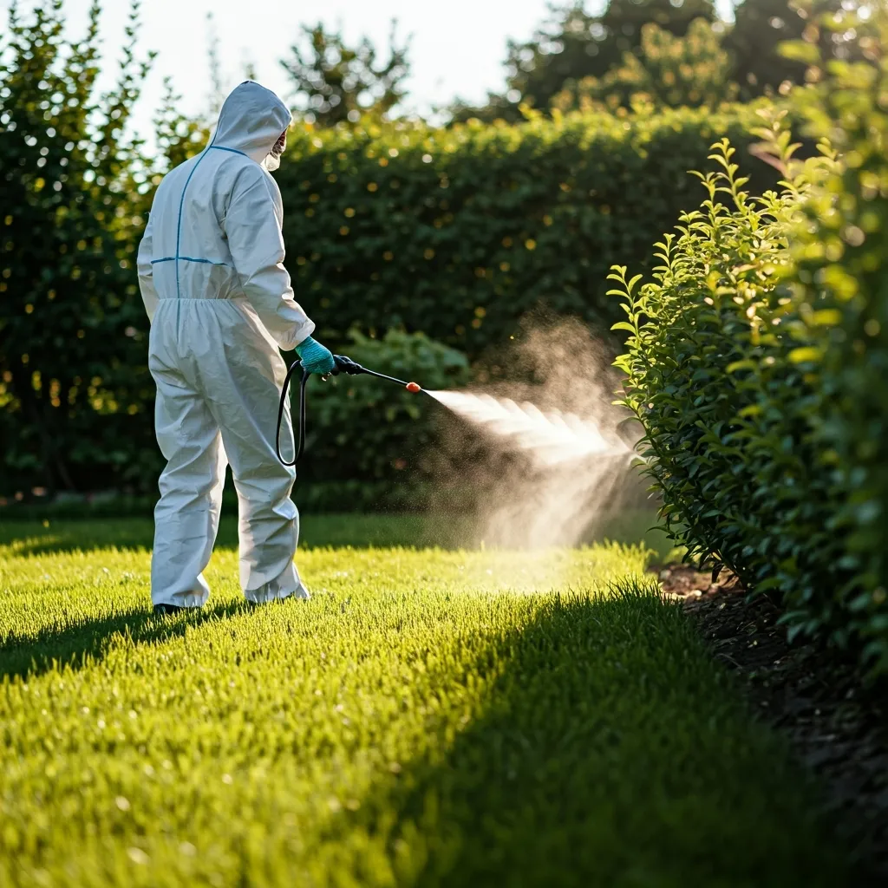
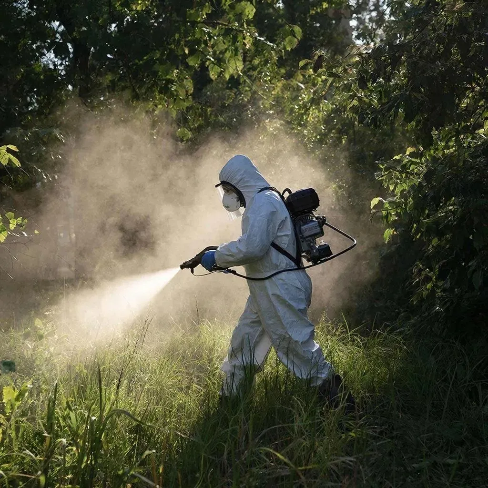

Что такое акарицидная обработка?
Как работает защита участка от клещей.
Защитите себя и близких от энцефалита и боррелиоза
Дмитрий | +7 (950) 642-22-92
🌿 Начинается сезон акарицидной обработки! Принимаю заявки на обработку участков от клещей и других насекомых. Как только подсохнет участок — можно начинать.
👋 Здравствуйте! Меня зовут Дмитрий, я частный специалист по дезинфекции и дезинсекции. Обрабатываю участки сертифицированным препаратом Циперметрин с помощью мотоопрыскивателя Stihl SR 430. Обработка создаёт защитный барьер на 1–1,5 месяца.
📞 Позвоните или напишите — проконсультирую БЕСПЛАТНО и рассчитаю стоимость!
| Площадь участка | Цена (₽) |
|---|---|
| До 6 соток | 2 000 |
| 7–15 соток | 3 000 – 5 000 |
| 16–23 сотки | 5 000 – 8 000 |
| 24–29 соток | 8 000 – 12 000 |
| 30+ соток | 400 ₽/сотка |

Защита участка от клещей
Обработка дачного участка

Профессиональное опрыскивание